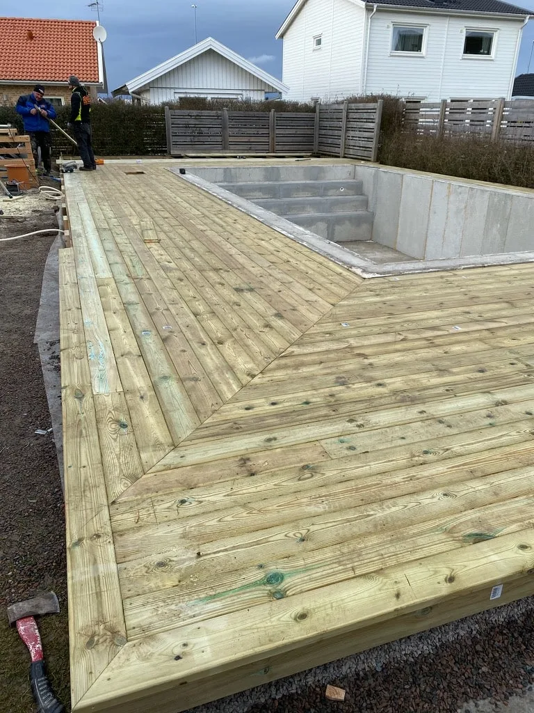
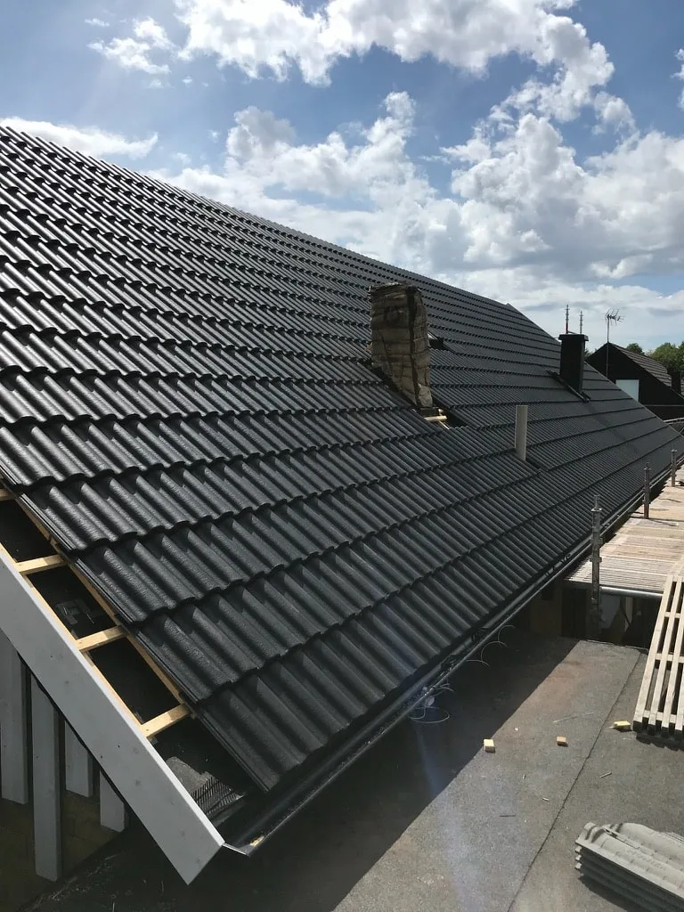
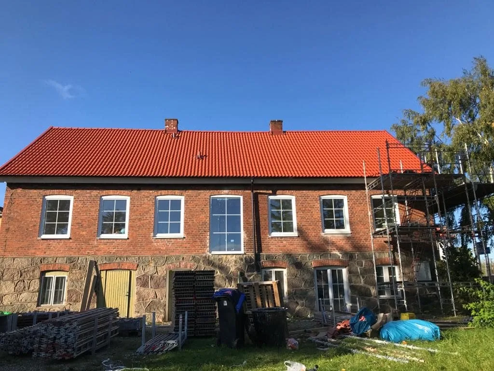
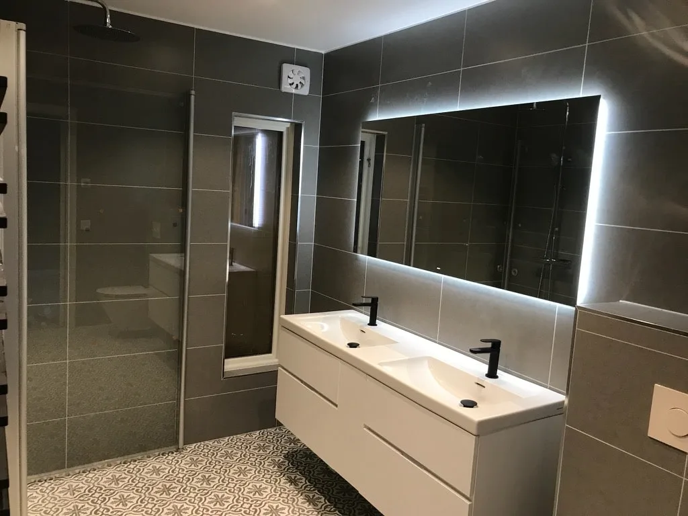
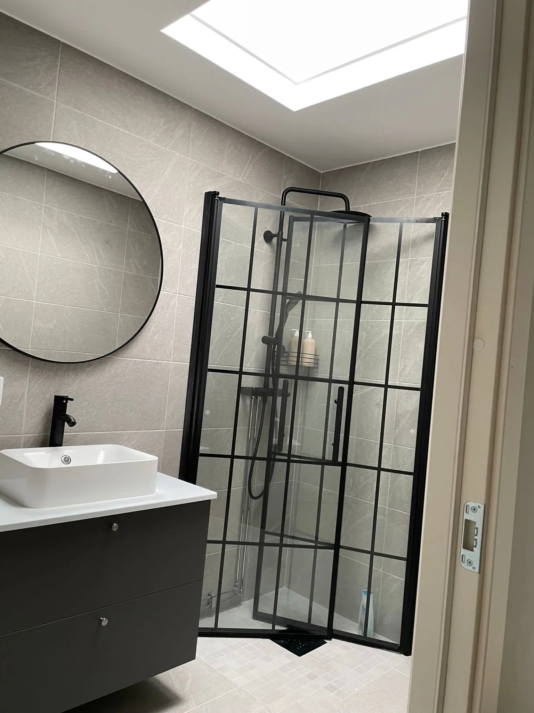
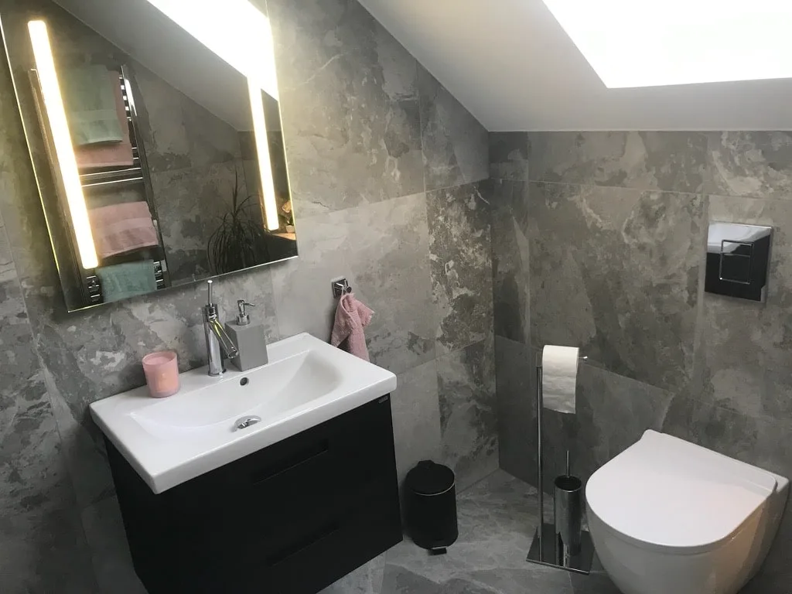
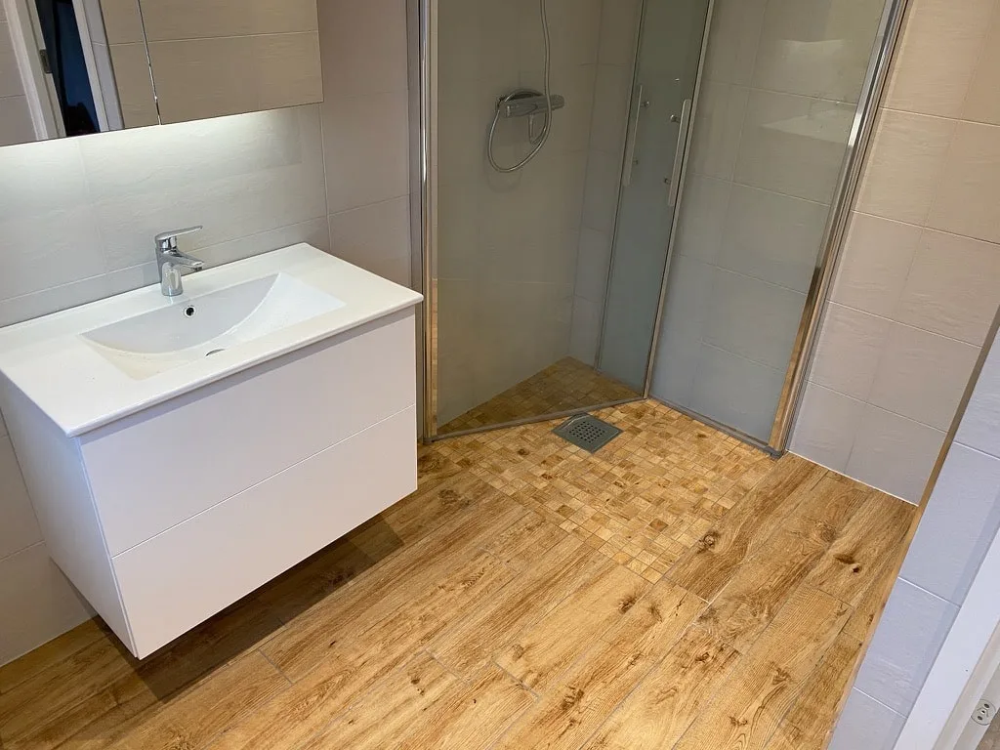
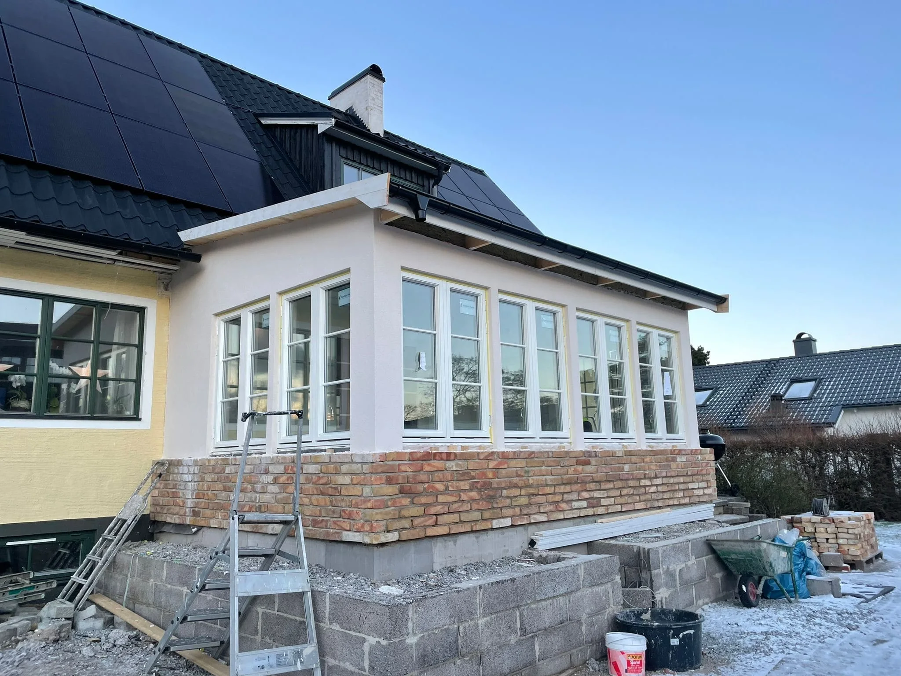
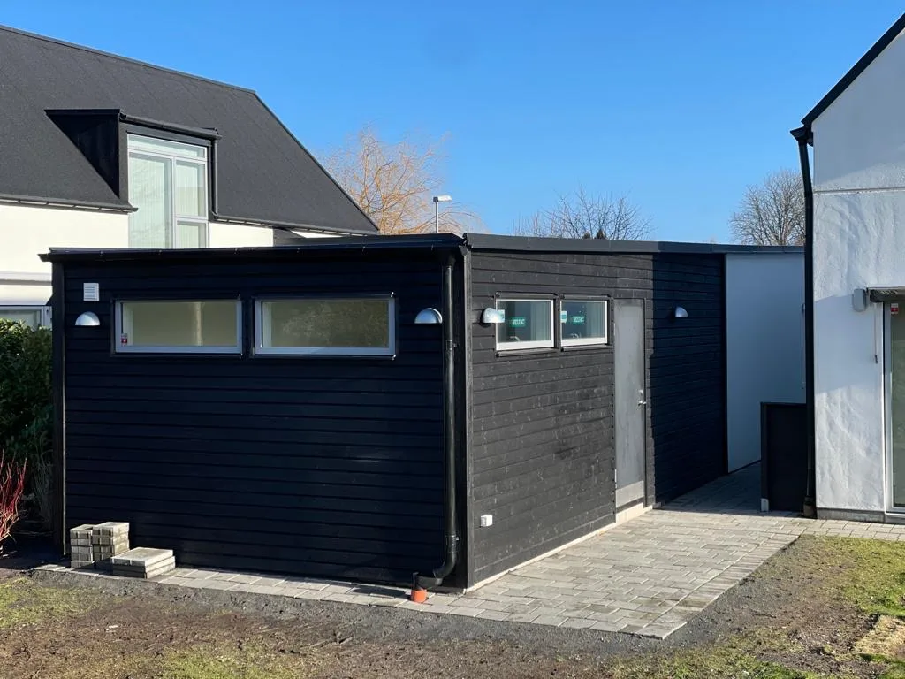

Se vad vi bygger.
Tak, badrum och nya utrymmen. Här samlar vi bilder från företagets publicerade referensprojekt.
15 projekt

Uteplats i trä
Totalentreprenad
Altan runt pool
Totalentreprenad
Takrenovering med mörka pannor
Takläggning
Nytt tak på tegelhus
Takläggning
Tak på flerbostadshus
Takläggning
Badrum med ljus kommod
Badrumsrenovering
Badrum med dubbla handfat
Badrumsrenovering
Badrum med rund spegel
Badrumsrenovering
Badrum under snedtak
Badrumsrenovering
Förnyelse av badrum
Badrumsrenovering
Garage med putsad fasad
Tillbyggnad
Tillbyggnad med glaspartier
Tillbyggnad
Garage med mörk fasad
Tillbyggnad